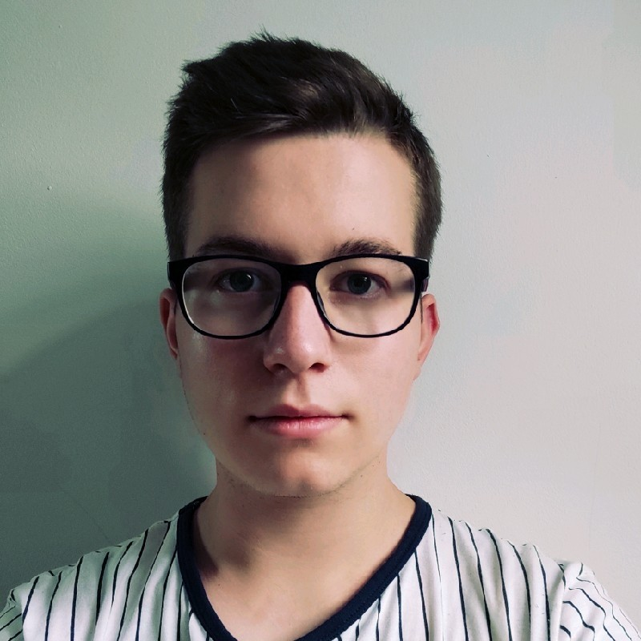
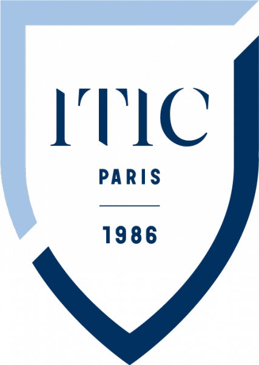
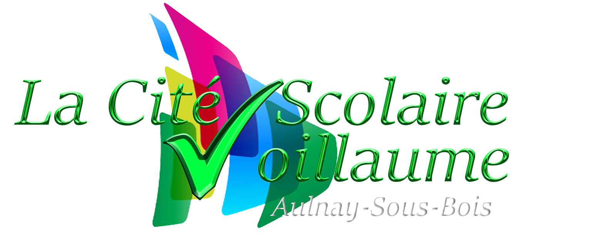
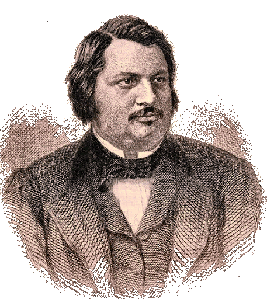
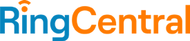
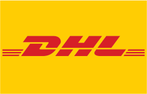
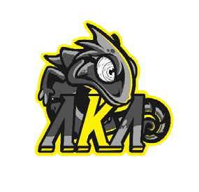

Qui suis-je ?
-

Je m'appelle Djason Gadiou, j'ai 21 ans et je suis un développeur web junior. Je suis passionné par le développement web et l'informatique, je suis actuellement en formation au sein de l'école ITIC PARIS pour ma seconde année de BTS SIO SLAM. Je suis également passionné par l'Esport & les nouvelles technologies.
GitHub CV LinkedIn -->
Formation
-
BTS SIO - Option SLAM (Deuxième année)
ITIC Paris- Installation et maintenance de supports informatiques. - Cybersécurisation des services informatiques. - Développement et design d’applications informatiques
 -
BTS SIO - Option SLAM (1ère année)
Lycée Voillaume, Aulnay Sous Bois- Développement de solutions informatiques pour les entreprises. - Gestion d’un projet informatique. - Développement web et Intégration web. 
-
Baccalauréat STMG - Option SIG
Honoré de Balzac, Mitry Mory- Développement de solutions informatiques pour les entreprises. - Gestion d’un projet informatique. - Développement web et Intégration web. 
Compétences
Expériences professionnelles
-
RingCentral (Alternance)
IT Deskside Support- Assurer les services informatiques aux utilisateurs au sein de l’entreprise. - Gérer la configuration de tous les ordinateurs portables pour les nouveaux embauchés en France/Allemagne. - Gérer les envois du bureau de Paris aux nouveaux embauchés et aux employés actuels pour la France/l’Allemagne. - Support des appareils des utilisateurs de France/Allemagne Royaume-Uni sur site et à distance. - Gestion des actifs pour la France/l’Allemagne. - Création et maintien de la documentation pour les employés.
 -
DHL CDG (Stage Informatique)
- Preparation, installation et configuration des postes de travail. - Assurer le suivi des collaborateurs tout au long du processus de résolution des incidents. - Répondre aux exigences et aux initiatives menées par les services IT centraux selon les besoins. - Résolution à distance par un outil de prise de main si nécessaire. - Rédiger des supports d’aide ou articles de base de connaissances techniques et fonctionnels à la résolution des problèmes à destination des collaborateurs. 
-
Akademus Esport
Responsable Esport & Manager d’équipe- Gestion des équipes Esport compétitives (Fornite / Valorant / League of Legends & NBA2K). - Communication entre les équipes et les community managers. - Recrutement de personnels pour contribuer à la performance d’équipe. - Assister aux CA et aider à la réorganisation des objectifs de l’organisation. 